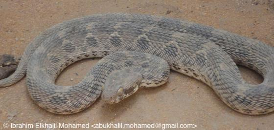
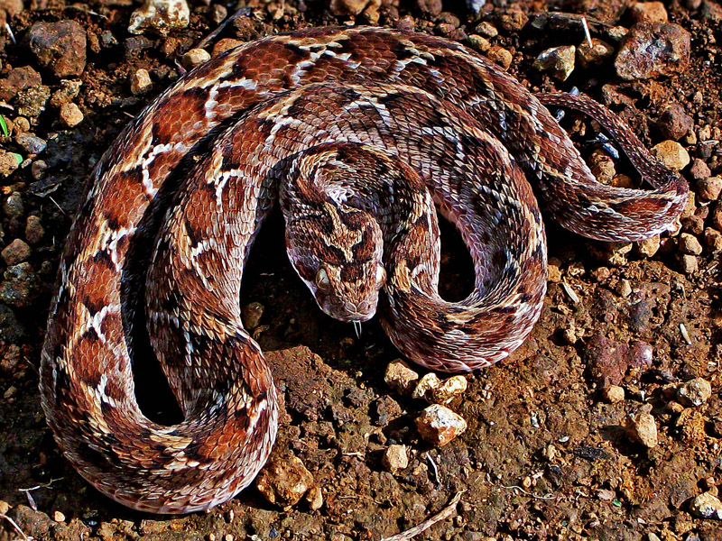

.jpg)

.jpg)

West African Carpet Viper
ชื่อวิทยาศาสตร์: Echis ocellatus
ลักษณะทั่วไป
เป็นงูพิษขนาดเล็ก แต่ถือเป็นหนึ่งในงูที่มีอันตรายและสร้างความสูญเสียชีวิตแก่ผู้คนมากที่สุดในทวีปแอฟริกา มีลักษณะทั่วไป ขนาด และรูปร่างที่เป็นเอกลักษณ์เฉพาะตัว ซึ่งช่วยให้มันกลมกลืนกับสภาพแวดล้อมและล่าเหยื่อได้อย่างมีประสิทธิภาพ
Carpet Viper จัดเป็นงูขนาดเล็กถึงขนาดกลาง ความยาวลำตัวโดยเฉลี่ยอยู่ที่ 30–50 เซนติเมตร ตัวที่โตเต็มที่อาจยาวได้สูงสุดประมาณ 65 เซนติเมตร เพศเมียมักจะมีขนาดลำตัวยาวและใหญ่กว่าเพศผู้เล็กน้อย
หางเรียวสั้น ลำตัวค่อนข้างสั้น ทรงทรงกลมป้อม แข็งแรง และตอบสนองต่อสิ่งกระตุ้นได้รวดเร็ว
เกล็ดบนลำตัวขรุขระเป็นสันชัดเจน (Keeled scales) โดยเฉพาะเกล็ดบริเวณข้างลำตัวจะมีสันที่เรียงตัวเป็นมุมเฉียง เมื่อ Carpet Viper ขดตัวถูเกล็ดเหล่านี้เข้าด้วยกันจะทำให้เกิดเสียงขู่อันเป็นเอกลักษณ์
หัวมีลักษณะทรงสามเหลี่ยมกว้าง ชัดเจน และแยกออกจากคออย่างเห็นได้ชัด
หัวคลุมด้วยเกล็ดขนาดเล็กขรุขระ ไม่ใช่แผ่นเกล็ดขนาดใหญ่เหมือนงูบกทั่วไป
หัวคลุมด้วยเกล็ดขนาดเล็กขรุขระ ไม่ใช่แผ่นเกล็ดขนาดใหญ่เหมือนงูบกทั่วไป
ดวงตาโปนโต ตั้งอยู่ด้านข้างของหัว รูม่านตาเป็นแนวตั้ง (Vertical pupil) คล้ายตาแมว ซึ่งช่วยในการมองเห็นได้ดีในเวลากลางคืน
อาหารการกิน
- เหยื่อหลัก:
- สัตว์เลี้ยงลูกด้วยนมขนาดเล็ก: โดยเฉพาะหนูและหนูพุก ซึ่งเป็นอาหารหลักที่ทำให้มันมักเข้ามาใกล้เขตชุมชนหรือพื้นที่เกษตรกรรม
- สัตว์เลื้อยคลานและสัตว์ครึ่งบกครึ่งน้ำ: กิ้งก่า จิ้งจก และกบชนิดต่างๆ
- สัตว์ไม่มีกระดูกสันหลัง: แมลงขนาดใหญ่ ตะขาบ และแมงป่อง (โดยเฉพาะงูตัววัยเยาว์จะกินสัตว์ไม่มีกระดูกสันหลังเป็นหลัก)
Carpet Viper เป็นสัตว์กินเนื้อที่ล่าสัตว์ขนาดเล็กหลากหลายชนิด โดยใช้วิธีซุ่มโจมตี (Ambush predator) แล้วฉีดพิษก่อนจะกลืนเหยื่อลงไป
นิสัยและพฤติกรรม
- ในตอนกลางวัน Carpet Viper จะกบดานอยู่นิ่งๆ ใต้ขอนไม้ ก้อนหิน รอยแยกของดิน หรือซ่อนตัวอยู่ใต้เศษใบไม้แห้ง ด้วยลวดลายสีน้ำตาลจุดขาวบนตัว ทำให้มันพรางตัวเข้ากับพื้นดินได้อย่างสมบูรณ์แบบจนคนมักจะเหยียบโดยไม่ตั้งใจ
-
เมื่อรู้สึกถึงอันตราย มันมักจะไม่เลื้อยหนีทันที แต่จะใช้วิธีป้องกันตัวที่เป็นเอกลักษณ์:
- ขดตัวเป็นรูปทรงตัว "S" ซ้อนกันเป็นห่วง
- ขยับลำตัวถูเกล็ดที่มีสันขรุขระข้างลำตัวเข้าด้วยกัน ทำให้เกิดเสียงซู่ๆ รวดเร็วและดัง คล้ายเสียงไอน้ำรั่วหรือเสียงเลื่อยไม้ เพื่อเตือนไม่ให้ศัตรูเข้าใกล้
- ว่องไวและดุร้าย: เป็นงูที่มีปฏิกิริยาตอบสนองเร็วมาก หากถูกรบกวนในระยะกระชั้นชิด มันจะฉกโจมตีอย่างรวดเร็วโดยไม่ลังเล
- การพุ่งตัว: สามารถพุ่งฉกได้ไกลและสูงกว่าขนาดลำตัวของมัน ทำให้ผู้ที่เดินผ่านในระยะใกล้ถูกกัดได้ง่าย
นิสัยก้าวร้าวและการฉกโจมตี
ถิ่นอาศัย พิษ และความอันตราย
- ไนจีเรีย (Nigeria)
- กานา (Ghana)
- บูร์กินาฟาโซ (Burkina Faso)
- โตโก (Togo)
- มาลี (Mali)
- ไนเจอร์ (Niger - เฉพาะทางตอนใต้)
- ไอวอรีโคสต์ (Ivory Coast / Côte d'Ivoire)
- เซเนกัล, แกมเบีย, กีนี และมอริเตเนีย
- ทุ่งหญ้าสะวันนา (Savanna Belt): เป็นถิ่นอาศัยหลัก ทั้งทุ่งหญ้าสะวันนาแบบซูดาน (Sudan Savanna) และกีนี (Guinea Savanna)
- ป่าโปร่งและพื้นที่แห้งแล้ง (Dry Woodlands & Open Forest): ป่าเต็งรังหรือพื้นที่ที่มีต้นไม้พุ่มสลับกับพื้นดินแห้ง
- โขดหินและรอยแยกดิน: พื้นที่ที่มีหินขรุขระ รอยแยกของหิน หรือขอนไม้แห้งเพื่อใช้เป็นที่ซ่อนตัวในยามเช้าและกลางวัน
- พื้นที่เกษตรกรรม: มักพบได้บ่อยตามไร่ข้าวโพด สวนผลไม้ และฟาร์มต่างๆ เนื่องจากเป็นแหล่งที่มีประชากรหนูพุกและหนูไรจำนวนมาก
- ขอบเขตชุมชนและหมู่บ้าน: มักแอบเข้ามาตามกองไม้ กองอิฐ หรือใต้หลังคาบ้านเรือนชนบทเพื่อหากินและซ่อนตัว ส่งผลให้เกิดอุบัติเหตุคนเดินไปเหยียบหรือสัมผัสตัวงูในเวลากลางคืนได้ง่าย
- Hemotoxin (พิษทำลายระบบเลือด): เป็นฤทธิ์หลักที่รุนแรงที่สุด มีเอนไซม์ Prothrombin activators ซึ่งเข้าไปกระตุ้นให้ระบบการแข็งตัวของเลือดทำงานผิดปกติ โดยการใช้สารกลไกการแข็งตัวของเลือด (Fibrinogen) ในร่างกายจนหมดสิ้น ส่งผลให้เกิดภาวะ เลือดยอกไม่หยุดทั่วร่างกาย (Disseminated Intravascular Coagulation - DIC)
- Cytotoxic & Necrotoxic (พิษทำลายเซลล์และเนื้อเยื่อ): มีเอนไซม์ Metalloproteinases ที่ย่อยสลายโครงสร้างเซลล์ ทำให้เนื้อเยื่อบริเวณที่ถูกกัดตายและเน่าเปื่อย
- Vascotoxin (พิษทำลายหลอดเลือด): ทำลายผนังหลอดเลือดฝอย ทำให้เกิดการรั่วซึมของเลือดและสภาวะความดันโลหิตตกอย่างรวดเร็ว
- ภาวะเลือดไหลไม่หยุด (Consumptive Coagulopathy): เลือดจะซึมและไหลออกจากบาดแผลกัดไม่หยุด รวมถึงไหลตามซอกฟัน เหงือก รูรูขุมขน และรอยแผลเก่า
- เลือดออกภายในร่างกาย: เลือดออกในกระเพาะอาหาร (อาเจียนเป็นเลือด), เลือดออกในลำไส้ (ถ่ายดำหรือถ่ายเป็นเลือด), เลือดออกในทางเดินปัสสาวะ (ปัสสาวะเป็นเลือด) และมีจุดเลือดออกตามผิวหนัง
- ช็อกและความดันต่ำ: เกิดจากการเสียเลือดจำนวนมากและผนังหลอดเลือดรั่วซึม
- การเสียชีวิต: หากไม่ได้รับเซรุ่มแก้พิษ ผู้ป่วยมักตายจากภาวะช็อก การเสียเลือดอย่างรุนแรง หรือเลือดออกในสมอง
- ระดับความอันตราย: โคตรอันตราย ☠☠☠☠☠(งูที่อันตรายที่สุดในโลก🎖️🎖️🎖️🥇):
- โอกาสพบเจอสูงมาก (High Encounter Rate): เป็นงูพิษที่ปรับตัวเก่ง ชอบอาศัยในเขตทุ่งหญ้า พื้นที่เกษตรกรรม และมักแอบเข้ามาหากินใกล้ชุมชนมนุษย์ ทำให้เกษตรกรและชาวบ้านในแอฟริกาตะวันตกมีโอกาสเดินไปเหยียบหรือเจอในระยะกระชั้นชิดสูงมาก
- พฤติกรรมดุร้ายและกลมกลืน (Aggressive & Cryptic): สีและลวดลายช่วยให้พรางตัวกับพื้นดินและใบไม้แห้งได้แนบเนียนเกือบ 100% เมื่อถูกรบกวนมันจะไม่เลื้อยหนี แต่มักขดตัวขู่และพร้อม พุ่งฉกอย่างรวดเร็วและแม่นยำ
- ความรุนแรงของพิษและอัตราการเสียชีวิต (Venom Toxicity & Mortality): พิษทำลายระบบเลือดและเนื้อเยื่ออย่างรุนแรง ทำให้เลือดไหลไม่หยุด อวัยวะภายในล้มเหลว และตาย
- ข้อจำกัดทางการแพทย์ในพื้นที่ (Medical Resource Deficit): เหยื่อส่วนใหญ่โดนกัดในพื้นที่ชนบทห่างไกลที่ขาดแคลนเซรุ่มแก้พิษและการแพทย์ทันเวลา ประกอบกับความเชื่อผิดๆเรื่องหมอพื้นบ้าน ส่งผลให้ Carpet Viper ครองแชมป์งูที่ฆ่าคนมากที่สุดในโลก
ถิ่นอาศัย: Carpet Viper เป็นงูเฉพาะถิ่นที่พบได้ในแถบ แอฟริกาตะวันตก (West Africa) เป็นหลัก โดยครอบคลุมประเทศต่างๆ ตามแนวเขตทุ่งหญ้าสะวันนา ได้แก่:
นอกจากนี้ ยังมี Carpet Viper อีกหลายสายพันธุ์กระจายตัวในพื้นที่ต่างๆ อาทิ Egyptian Carpet Viper (Echis pyramidum)(รูปที่ 2) ในแอฟริกาเหนือ Oman Carpet Viper (Echis omanensis)(รูปที่ 3) ในตะวันออกกลาง และ Indian carpet viper (Echis carinatus) (รูปที่ 4) ในอนุทวีปอินเดีย
ลักษณะพื้นที่อาศัยและสภาพแวดล้อม (Habitat Preferences)
Carpet Viper ทนทานต่อสภาพอากาศแห้งแล้งและปรับตัวเข้ากับสภาพแวดล้อมได้ดีมาก โดยมักพบในพื้นที่ลักษณะดังนี้:
หนึ่งในปัจจัยที่ทำให้ Carpet Viper เป็นอันตรายต่อมนุษย์มากที่สุด คือการที่มันชอบเข้ามาอาศัยในพื้นที่กิจกรรมของมนุษย์:
พิษ: พิษของ Carpet Viper จัดเป็นหนึ่งในพิษงูที่อันตรายที่สุดในทวีปแอฟริกา(และในโลก) โดยมีฤทธิ์หลักในการทำลายระบบเลือดและเนื้อเยื่ออย่างรุนแรง
รูปแบบและองค์ประกอบของพิษ (Venom Composition):
ตัวซีเคร็ตบางตัวอาจมีพิษทำลายระบบประสาทด้วย
อาการของผู้ป่วยจะแบ่งออกเป็น 2 ระยะหลักตามเวลาและการกระจายของพิษ:
1. อาการทันทีหลังถูกกัด (0 – 1 ชั่วโมง)
มีอาการปวดแสบร้อนทันทีบริเวณแผล และความปวดจะเพิ่มขึ้นเรื่อยๆ บริเวณที่ถูกกัดจะบวมอย่างรวดเร็วและลามไปทั่วอวัยวะ (เช่น จากนิ้วลามไปถึงหัวไหล่) ร่วมกับมีรอยเขียวช้ำ เกิดถุงน้ำหรือถุงเลือดพองโต หากไม่ได้รับการรักษาทันเวลา เนื้อเยื่อรอบแผลจะกลายเป็นสีดำ เน่าตาย และอาจรุนแรงถึงขั้นต้องตัดอวัยวะ
2. อาการระดับลุกลาม (1–24 ชั่วโมง)
Fun Fact
- ฉายา "มัจจุราชเกล็ดใบเลื่อย" (Stridulation Maestro): แทนที่จะขู่ด้วยการพ่นลมทางจมูกเหมือนงูทั่วไป Carpet Viper จะขดตัวเป็นรูปตัว "S" แล้วเอาเกล็ดข้างลำตัวที่มีลักษณะขรุขระเป็นสันเฉียงมาขัดถูกันเองอย่างรวดเร็ว เกิดเป็นเสียง "ซู่ๆ" คล้ายเสียงไอน้ำรั่วหรือเสียงเลื่อยไม้ ซึ่งเป็นเทคนิคการขู่เตือนศัตรูที่ไม่เหมือนใครในโลกงู
- หนึ่งแผ่ีนดิน หนึ่งสูตรยา: Carpet Viper ในแต่ละพื้นที่จะมีโครงสร้างทางเคมีของพิษต่างกันมาก ตัวอย่างเช่น เซรุ่มที่อาจใช้ได้ดีกับงูในอียิปต์อาจไม่ได้ผลกับงูในซาอุฯ
- แชมป์โลกเรื่องการสังหารในแอฟริกา: แม้คนส่วนใหญ่จะกลัว Black Mamba หรือ งูเห่า แต่ในความเป็นจริง Carpet Viper คืองูที่ ฆ่าคนและตัดขาคนมากที่สุดในทวีปแอฟริกา เกิดจากความดุ ร่างเล็กพรางตัวเนียน และชอบอาศัยอยู่ใกล้ไร่นาของมนุษย์ ทำให้มีเหยื่อถูกกัดตายหลายหมื่นคนต่อปี